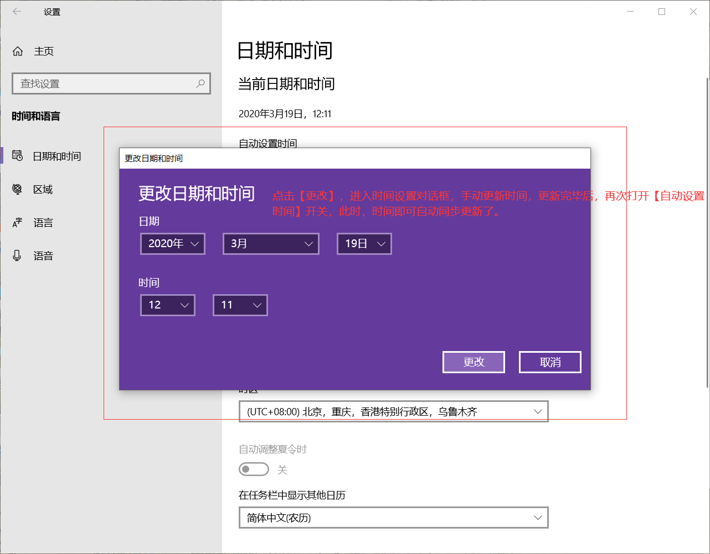

由于本地时间不准确，导致客户端出现一直在连接中的解决方案
为什么在过程中会出现连接不上，一直加载中？ 这是因为新的加密协议为了保障大家的信息安全，误差时间只允许在90秒范围内，而部分用户使用的设备（App，Win，Mac）时间比北京时间快或慢90秒以上，则会造成连接不上或一直连接中。遇到此类问题，我们只需要将本地时间纠正为正确时区时间，即可快速解决。
注：假如你在东8区，需要纠正为北京时间；假如你在0时区，则需要纠正为伦敦时间。
官方标准北京时间地址：http://www.beijing-time.org/，您可点击此链接查看并确认本地系统时间是否有误差。
那么我们如何校准本地系统时间呢？ 下面我们用图示给大家分别详细介绍一下Android，Win10，Win7，Mac四个系统 时间同步 的方法：
首先您需要先确认一下您的安卓设备时间是否和世界时间一致；
点击此处可查看准确的北京时间，便于在于东八区的您确认本地系统时间是否存在误差。
如果存在误差，您可以按照以下方法进行纠正（以OPPO手机为例）：
第一步：在安卓手机的图标界面中找到设置图标，点击设置图标，进入安卓手机设置界面。
第二步：手指滑动设置界面，在找设置界面中找到“其他设置”—“日期和时间”，点击进入日期和时间设置。

第三步：点击进入日期和时间设置界面后，界面设置从上至下第二项显示【自动确定日期与时间】的一个勾选框，下方就是设置日期、选择时区、日期时间格式设置等。 点击【自动确定日期与时间】右侧的勾选框，把这个框框选上，就可以使用网络所提供的时间值。到此自动设置时间自动同步就完成了。
第一步：点击电脑左下角【开始菜单】，在弹出的菜单栏中点击【设置选项】；
第二步：进入设置界面，点击【时间和语言】；
第三步：进入设置界面，找到日期和时间，将【自动设置时间】打开；打开之后在下方的时区处，选择所在的时区；
第四步：如果自动更新仍然获取不到最新时间，可以点击下方【更改】；
第五步：进入时间设置对话框，手动更新时间，然后再次打开自动更新；此时时间即可自动进行同步了。
此外，您也可以设置与Internet 时间同步，具体方法如下：
第一步：在系统左下角搜索区域找到Win10系统的【控制面板】；在【控制面板】中选择【时钟与区域】；
第二步：在【时钟与区域】中选择【设置时间和日期】；
第三步：在【时间和日期】中选择【Internet 时间】；
第四步：在【Internet 时间】中，点击【更改设置】，然后勾选【与Internet 时间服务器同步】，最后点击【确定】，就好了。
第一步：点击电脑屏幕右下角位置可以看到的当前时间和日期；
第二步：点击下方图片中的【更改日期和时间设置】；
第三步：点击下方图片中的【Internet 时间】；
第四步：点击下方图片中的【更改设置】；
第五步：勾选下方图片中的【与Internet时间服务器同步】，服务器选择【默认】，或者点击下拉三角任意选择，并点击确定，如下图；这样时间就自动更新好了。
第一步：选取苹果菜单 >“系统偏好设置”，然后点按“日期与时间”。 在“日期与时间”面板中，选择【点按锁按钮以进行更改】；
第二步：为了安全起见，Mac系统更改设置需要输入电脑用户名和密码，才可以进行更改，因此您需要先在这里输入用户名和密码，再进行设置更改；
第三步：勾选上【自动设置日期与时间】，选择好自己所在的时区；然后点击【点按锁按钮以防止再次更改】；此时关掉系统设置回到桌面，即可看到时间已经同步设置了目前的所在地区时间。
关于Mac系统【时区】说明：点击【系统偏好设置】-【日期与时间】-【时区】，系统会自动根据您的所在位置为您默认选择好时区，此时勾选好【使用当前位置自动设定时区】即可；不过，您也可以点击【点按锁按钮以进行更改】，手动在地图上点击自己所在的区域，作为自己的时区。